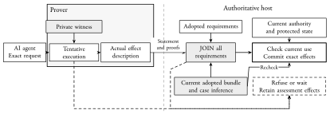
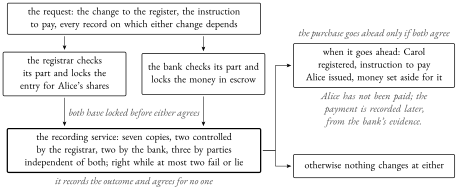
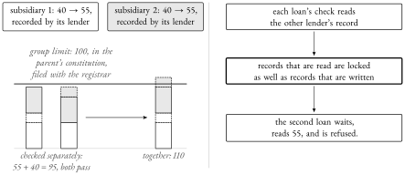
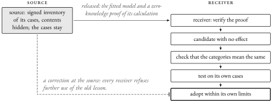

Abstract. Mass is a decentralized network of sovereign execution environments for AI agents. Each environment learns the correct, safe interpretation of its sovereign law, policy and regulation, so it keeps up with fraud and bad actors on its own. An agent’s work can require several institutions, each controlling different records and powers. We specify how they execute that work together while retaining their own rules and private evidence.
Typed bytecode identifies each proposed act’s authority, objects, resources and continuing obligations. Zero-knowledge proofs let institutions check these requirements without receiving private credentials, rules or case records. Polycentric consensus joins the required institutional admissions in one recoverable decision. Other institutions recognize specified results under their own policies and treaties, forming partial consensus across the network. Learned interpretations propagate with zero-knowledge proofs of their calculation and require receiving adoption. Holders retain control of their private secrets and consent.
Finite results give conditions for exact execution, complete authority coverage, joint admission and continuity through correction and succession. Private proof histories additionally require the unproved Recursive Oracle Fidelity hypothesis for concrete hashes. Progress through model changes needs a separate service condition. Local admission, selective coordination and proof reuse organize work for billions of agents. A conditional capacity construction accounts for one billion maintenance tasks and 32 fresh private queries. Synthetic lifecycles connect learning, registration and later payment. In a separate fraud comparison, direct transfer increases false holds. Receiving validation matches local learning, with no incremental transfer benefit. The organizing principle is authorized change with accountable consequences.
1. Introduction
AI agents conducting business need their actions to take effect in the institutions that govern them. Forming a company, changing its owner and paying a counterparty involve different powers, records and obligations. Each institution must decide what it permits and what its execution changes. Those decisions must compose while institutions retain control of their rules and private records.
Consider Carol’s purchase of a company from Alice. The registrar can change ownership, and the bank can pay Alice from Carol’s purchase escrow. Moving the company’s equipment abroad also needs the company, custodian and destination authority. Registration alone establishes neither payment nor permission to move equipment. The agent must coordinate the institutions that hold these distinct powers.
Even within one institution, rules require interpretation. An administrative request may transfer control, or a payment may conceal its beneficiary. Fraud and other abuse adapt to fixed checks; rulings and investigations expose relationships those checks miss. Each institution’s execution environment must keep learning how its law, policy and regulation apply, without acquiring authority to amend those rules on its own.
Existing arrangements resolve parts of this problem. A central registry’s authority extends across independent institutions only with their agreement. Bilateral integration can require an instrument for every pair of institutions (§7.1) [11]. Each integration must establish what messages authorize, which records they change and what follows correction or failure. A blockchain organized around one global order and public institutional state brings independent work into a shared ordering and exposes records institutions may need to keep private. Its history supplies neither local legal interpretations nor decisions to recognize another institution’s act. The execution model must connect those decisions while keeping private evidence and independent work local.
We introduce Mass, a novel decentralized network of sovereign virtual machines for AI agents, to provide this execution model. A sovereign here is an independently governed institution. Its sovereign virtual machine executes under its adopted rules and controls its authoritative state. Each machine is a network node whose service may use several replicas. Mass is not a blockchain. Its novel consensus layer, polycentric consensus, coordinates the institutions whose powers and state an operation needs, while independent work proceeds locally.
The machine learns from rulings, investigations and outcomes under a standing mandate, which authorizes specified updates in advance and reserves other judgments. Its institutional world model represents learned rule application and institutional outcomes [3]. Qualifying updates can be adopted automatically. The machine assesses requests under the adopted interpretation and rechecks authority and dependencies before protected effects. A receiver can learn from another institution without adopting its rules or accepting its conclusions for every purpose.
Typed bytecode connects an institution’s decision to instructions that distinguish authority, objects, resources, evidence and obligations. The machine checks the program and its full proposed effects before commitment. Zero-knowledge proofs verify authority and facts without transmitting the private credentials and records that support them. Carol proves credential possession and consent while keeping her root secret in her wallet, the software holding her credentials and secrets. A release contract fixes the recipient, purpose and permitted disclosure, including conclusions and visible effects. Learned interpretations propagate with zero-knowledge proofs of their calculation, subject to authorized use.
For a joint operation, each required institution checks its contribution against the same complete description of effects. Polycentric consensus combines these admissions into one recoverable outcome. Further institutions may recognize specified results under their policies and treaties. Partial consensus records admissions and accepted recognition judgments with their purposes and authority. Recognition links extend this collection; delivered corrections require reassessment. Other sovereigns retain their decisions within their powers and binding commitments.
An autonomous business is a legal entity whose agents conduct its operations under an adopted mandate. An autonomous asset is an identified resource with responsible legal persons and programs governing its use under such a mandate. Agents can form these businesses, enter contracts, trade and manage assets across the network. With billions of agents at work, independent operations execute locally. Joint decisions involve the institutions whose powers or state an operation needs. Proof aggregation and authorized reuse reduce repeated verification while preserving operation identity, cost and obligations.
Obligations can survive the rule or operator that admitted them. Carol may become the registered holder while the bank command remains capable of payment. Correction must retain that registration occurred and account for possible payment. The organizing principle is authorized change with accountable consequences. Institutions can create powers, accept authorized risks, reverse decisions, discharge liabilities, amend laws and disagree. Safety implies neither permanent settlement, uniformly favorable judgments nor unconditional completion.
Our design joins typed bytecode, private admission, polycentric and partial consensus, and learning carried by zero-knowledge proofs. Finite results give conditions for exact effects, complete represented authority coverage, serial composition, correction, semantic extension and succession under stated adoption, mediation, proof and service premises. Progress through model updates requires a separate service condition. Sections 2–3 develop execution and joint admission; §§4–6 follow consequences, learning and institutional change. Section 7 treats formation and the separate operating account, §8 presents bounded executable evidence, and §§9–10 give related work and conclusions. The appendices and Technical supplement specify typed bytecode, private authority and recursive histories under their stated hypotheses; they do not establish deployment.
2. Interpretation and exact execution
The authority model identifies an institution’s acts. We follow a rule’s application through request interpretation and typed execution to its register change and external instructions. The interpretation retains affected interests, evidence and reserved judgments.
2.1. Governing interpretations
Each machine’s institutional world model represents rule application and institutional outcomes [3, §§1–3]. Law and policy supply requirements, while competent rulings show their application. Execution and investigation supply observations of conduct, consequences and controls. The representation must retain the relationships each question needs, including control, capacity, objects and time. Verdict summaries can omit relationships needed for a new request.
The model can interpret a rule, estimate an empirical outcome or select an adopted response. These uses need different grounds. A consent ruling concerns the rule’s application. A fraud estimate can justify an authorized investigation without becoming an adjudicated finding. Missing outcomes remain missing, and competent decisions remain available where the evidence cannot determine the interpretation.
Weights alone do not determine an interpretation. Preprocessing can assign a request to a different category, and a changed threshold can give the same score another consequence. The institution therefore adopts an operative bundle containing parameters, feature and input meanings, retrieval rules, calibration, uncertainty treatment, consequence policy and inference semantics. The bundle also names its runtime, permitted uses, normative scope, source revisions and evidence. A machine may train locally, use shared parameters, delegate training or adopt a local adapter. Sovereign control concerns the interpretation adopted, not a separate model for each agent.
The standing mandate fixes the update procedure, objectives, labels, permitted consequences and reserved judgments, including limits on accumulated delay, cost and disclosure. Each cycle generates and verifies a candidate before adoption checks the complete bundle under the authority already in force. Execution, investigation and correction then supply evidence for the next cycle. A stronger learner changes the calculation and assurance needed at this interface. It gains no power to amend law or decide a reserved question.
The consent example makes this process concrete. It distinguishes ordinary transfers, common-control reorganizations and nominee or custody changes. For category , counts eligible rulings and those requiring consent. The finite learner fits . The adopted procedure returns NoAdditionalConsent at , RequireConsent at , and Refer between them. An empty category gives and reserves judgment. Section 8.1 gives the synthetic rulings and fitted values.
RequireConsent needs competent consent for the exact case. Refer leaves the question to the authorized officer. NoAdditionalConsent satisfies this requirement alone. Authority, holder, eligibility, other officer answers and execution resources still govern the transfer. This finite fit checks a specified interpretation procedure. It neither parses arbitrary legislation nor proves the legal correctness of its generalization.
2.2. Request assessment
An assessment applies the adopted interpretation to a request. Its record identifies source authority, rule, request revision, subject, objects, purpose and use stage. It preserves applicability, exemptions, evaluated conditions, unanswered questions, residual duties and disclosure restrictions. Permit, Refuse or Await summarizes the receiving decision, but cannot replace the record that explains it.
For a learned assessment, the record also binds the entire operative bundle and actual feature, input and retrieval cutoffs. The host computes the supported inference or verifies the adopted proof, then rechecks the complete bindings at the protected effect. A changed feature pipeline invalidates an earlier assessment even with unchanged parameters. Section 5 explains how zero-knowledge proofs can supply the consent requirement.
Assessment itself can spend resources, disclose information or suspend for an officer. These effects survive refusal of the proposed transfer. Evaluation order therefore belongs to the adopted institutional procedure. A default that requests judgment can suspend before an independently established exception is reached. A procedure that delays consequence bodies can select the exception without that request. Appendix A.1 gives the three schedules and the precise compiler boundary.
The host retains the schedule, current position, captured context, query ticket and all costs and disclosures already incurred. Resumption reconciles the ticket. An unanswered question cannot become false because evaluation stopped. After selecting a consequence, the host checks current authority and dependencies again. Required assessments retain their effects even when their consequence loses priority.
Assessment attempts belong to one continuing case, with its request revisions, sources, identity determinations and earlier contexts. Refusal ends an attempt, while an authorized change may justify another. In the reference, a rule change moves Permit to Refuse, and a further competent change permits a later attempt. The case records earlier occurrences and resource consumption. Its execution right stays bound to the institutional intent, so reassessment cannot repeat a completed register act or issue a second payment command. Earlier approval likewise supplies no perpetual permission.
2.3. Typed bytecode and the ownership operation
Lex expresses legal judgments, exceptions, authority, time and typed questions [1]. Op carries instructions, effects, resources and continuations [2]. An adopted execution profile fixes their meanings, supported syntax and host operations. Compilation produces typed bytecode, the instruction sequence the sovereign machine checks and executes. Its types carry the institutional distinctions on which admission depends.
An instruction identifies the authority, entity, subject, act, objects, purpose, recipient, request revision and use stage. Evidence of eligibility cannot stand in for a power to transfer. An instruction to pay cannot stand in for observed payment. Resources have owners, units and permitted uses. An outstanding obligation remains in the continuation when execution suspends. These distinctions let a module state what it requires, what it consumes and what it can leave behind.
The bytecode checker verifies control flow, assignment, ownership, effects and resource bounds. Moving a resource invalidates its old handle. Parallel branches receive disjoint resources, while alternatives retain every duty that survives their chosen path. Possible effects include all branches. Evidence available after a branch must either hold on every predecessor or bind the actual predecessor. A changed dependency invalidates its evidence unless checked transport establishes continued validity. Types support modular checks, early rejection and reusable proof obligations without increasing expressiveness over the corresponding untyped encoding.
The Technical supplement’s Appendix A specifies this execution contract. Certificates connect actual source, intermediate and bytecode constructors to verdicts, effects, ownership, evidence, duties and suspension in both directions. Private code must match its adopted commitment. Types expose the obligations for admission and proof before effects commit. The certificate and current-use checks discharge them under the profile’s premises. Faithful legal encoding and sound full-language compilation remain distinct obligations.
The executable ownership instance checks a narrower source and host profile; it does not implement the specified bytecode checker. It uses synthetic jurisdictions J-A and J-B. The compiler produces an eligibility decision, and the linker binds it to ownership.transfer. Appendix A.2 gives the supported constructors and call. The request names registry-A, register-A:ownership, company-7, rule ownership-7, its current revision and epoch, and use stage Admit. Alice is the prior holder, Carol the new holder, and Alice the recipient of 100 currency units from Carol’s personal purchase escrow.
An absent officer answer or Refuse leaves Alice as holder and the cash available. Permit changes the holder once, consumes seven of 100 service units and reserves all 100 currency units. Cash available is then zero and cash spent remains zero. The continuation contains that judgment, disclosure restrictions and one payment command under its provider contract. Unknown payment leaves that command and reserve for the current or replacement planner to reconcile.
2.4. Exact execution
We state exact execution for a finite profile with independently defined source and host semantics. The source syntax is
The Boolean is an already supplied choice value. It makes no claim about compilation of full effectful exceptions. Request binds the register, complete intent, selected rule, authority and use stage. The intent distinguishes holder, payment recipient, payment amount and service quantity.
Source rules separately specify service reservation, the native act and the external instruction. The host uses distinct slots to load a judgment and produce its effect. Lowering maps an act to LoadAndUse(q,q) and preserves sequences and the selected branch. The translation checker accepts exactly this lowering. The host rejects any difference between the loaded request and the effect request.
Lemma 1 (Atomic correspondence). For the finite profile, holds exactly when returns .
Proof. The context check tests the same full request, register, current authority, epoch and applicable rule as the source premise. Reservation checks the available service quantity and absence of an earlier reservation or native act, then subtracts and reserves that quantity. Native execution removes the first exact reservation and inserts the same register act, duty and judgment as the source rule. Induction on the reservation list establishes that removal equality. Instruction checks the existing duty and absence of the same command, then inserts the exact recipient and amount. All remaining fields are unchanged. Each failed host test contradicts its corresponding source premise, giving both directions. ∎
Theorem 1 (Restricted source-to-effect correspondence). Start the source and its accepted translation from the same state, using the same checked judgment evaluator selected for each stage and request. Their final states, stop reasons and residual programs correspond. Each committed effect satisfies the represented rule selected for that exact request. Native execution sets the admitted holder and preserves other objects. Initially valid service-account, duty and effect-uniqueness invariants remain valid.
Proof. Translation validation gives equality with the computed lowering. Induct on source syntax. The atomic case is Lemma 1. At an already assessed act, Refuse and Await retain its current host state and unexecuted act. A sequence passes a completed first state into its suffix, or retains the stopped residual followed by that suffix. Choice uses only its selected arm. This establishes equality of outcomes and residuals in both directions.
For a committed act, the checked judgment’s Permit branch implies that the selected rule expression is true and every required answer has the exact question, officer, request and epoch. The native insertion makes its holder the register’s current projection for that object. Other objects skip that insertion in their projection. The instruction projects the distinct payment recipient and amount from the same request.
The service account sums available, reserved and consumed quantities. Reservation uses under ; native execution moves the same from reserved to consumed. Instruction changes neither. Exact absence checks prevent repeated native acts and instructions. Induction composes these equalities with the retained duties and history, including the prefix before refusal or suspension. ∎
The theorem is mechanized for the finite calculus. Service units remain separate from cash, and assessment transitions preserve earlier assessment events. The Rust host compares its complete successor with an independently computed source transition.
An adapter then checks the exact economic meaning: funding owner, estate, unit, purpose, beneficiary, occurrence, command, reserve, service consumption, disclosure and continuation. Appendix A.3 gives Lemma 1a and its implementation premises. The host computes the successor without a durable effect, checks the import and commits both representations with one receipt. Retry recovers the original act and command while returning the current continuation separately. Administrative and recovery routes enter the same protected boundary.
2.5. Complete requirements and private admission
The ownership profile fixes one operation’s requirements. Larger programs can exercise powers or activate requirements absent from their initial request. After tentative execution, the host resolves requirements against the complete patch, commands, resource use and residual duties. An operation we call JOIN matches each applicable requirement with an evaluation, authorized reuse or authenticated exemption. Unknown scope leaves an identified determination pending.
Zero-knowledge proofs supply these dispositions without transmitting their private witnesses. A witness is the credential, source fact, authority chain or execution record that satisfies the proof relation. The statement binds the adopted profile, current source commitments and complete proposed effect. For an evaluated requirement it also binds the source rule, certified bytecode, actual trace and arguments. JOIN checks both directions: every applicable requirement has one disposition, and every disposition covers an applicable requirement. A proof for payment to Alice cannot authorize payment to Bob.
Institutions can therefore contribute authority to one act while withholding the details that justify their contributions. Under its proof-system assumptions, the proof establishes the specified authority chain, scope and current-use conditions. Competent adoption gives those checks their institutional meaning. The host compares the statement with its protected inputs before committing the stated effect.
Some checks depend on both private source facts and private receiving criteria. For this case, Technical supplement Appendix C constructs distributed private evaluation over seven server roles. Privacy and availability require a static bound of two corrupt roles. Proofs bind encrypted inputs, their openings, complete execution views and resulting state, while invalid inputs follow the same declared schedule. The answer remains locked until the matching Commit. Before exposure, disclosure accounting covers answers, effects, refusals, timing and openings, including disclosures that survive an aborted operation.
An admission can depend on prior execution, whose private witnesses need not be disclosed again. Technical supplement Appendix D supplies recursive proofs under the unproved Recursive Oracle Fidelity hypothesis for concrete hashes. Exec verifies one execution, Merge checks compatible executions, and History extends a certified predecessor. Each parent verifies its child proofs and statements, binding the program, context, request, effects, duties and permitted output. A decreasing rank excludes circular ancestry, and imports retain ancestral assumptions and cumulative security costs. The receiver can verify the history while custody preserves evidence needed for later questions.

Figure 1. Learned assessment and exact admission. Typed execution describes the actual effect. The host runs JOIN to connect every applicable requirement to its bound evaluation, reuse or exemption. Zero-knowledge proofs protect private witnesses. The host rechecks current use before commitment and keeps assessment effects after refusal or waiting.
The registrar now has the admitted local act and its continuation. Moving the company’s equipment to its foreign branch leaves more to decide. The company, custodian and destination authority must assess one operation, including the relationships between their decisions.
3. Joint admission and selective recognition
The equipment transfer requires decisions that no local execution can supply alone. The company authorizes release, the custodian applies its duties, and the destination decides whether the evidence permits receipt. Their decisions can share resource constraints and depend on one another. We first establish what a receiving institution may conclude, then derive the affected scope and the joint decision. Considering these states together for analysis does not give any institution control of the others’ records, powers or interpretation.
3.1. Dependent judgments and selective recognition
The home register may establish Holder(company-7, Carol) while a receiving jurisdiction requires a further determination before licensing her activity. The refusal leaves the home act intact. The receiving case retains the reason and unanswered question for reassessment under a later rule or treaty.
To use the home record, the receiver needs a recognition bridge between the source and destination schemas. The bridge states each transferred field’s meaning, the adopted instrument and the purpose of reliance. Its finite checker tests every admitted source record against the destination’s dependencies. The receiver then checks whether its current policy permits that bridge for this use. A valid mapping acquires institutional effect through receiving adoption.
Using the private evaluation and proof relations of §2.5, a recognition proof checks the bridge against a committed source record and exposes the permitted conclusion. It binds the source act and proof history, receiving policy, purpose, restrictions and remaining duties. The receiver verifies those bindings before recording its decision. The finite bridge checker in Technical supplement §H.3 establishes schema preservation. Private execution must additionally satisfy §2.5’s proof and disclosure conditions.
Dependencies also constrain the combination of judgments. Suppose Boolean fields must satisfy . Both and satisfy the rule. Their coordinatewise meet does not. The derived field must follow the combined inputs.
Let be an admitted meet-closed subset of a finite input lattice, and let be monotone into the derived-field order. The schema admits , ordered componentwise. Its intrinsic meet is
Monotonicity makes this record a lower bound. Every other lower bound has its free input below and therefore lies below it. Recomputing the dependent field yields in the example. This calculation derives a schema value. Issuing that value as an institutional judgment remains a separate attributable act.
A source’s learned category may likewise map to a different category, a reserved question or an exclusion at the destination. Source authenticity cannot choose this correspondence. Receiving refusal preserves the original record and lets the source institution continue under its own rules.
A corridor is the connection between two nodes over which Mass automates business. It exists between every pair and carries requests and proofs between authenticated endpoints. Agreements such as trade treaties add mutual recognition of specified checks and records, subject to their authority, conditions and amendment rules in each participant’s policy. Recognition links may form a proper subgraph of the communication network. Operational replicas maintain each participant’s service under its own fault assumptions.
Purpose-specific admissions and accepted recognition judgments form partial consensus, which can extend beyond an operation’s participants. Section 3.3 develops the joint decision protocol and then shows how recognition builds on locally or jointly admitted acts.
3.2. Affected powers and dependencies
Consider two subsidiaries sharing a parent exposure limit of 100. Each proposes to increase its exposure from 40 to 55. Either change appears acceptable against the original state, but together they produce 110. The parent’s constraint belongs in both operations’ scope even if neither directly writes a parent record.
The scope checker uses the complete tentative patch, commands, resource use and duties. Its expression language supports named reads, finite lookups, arithmetic, conditionals and typed comparisons. Support includes reads from every syntactic branch and every lookup reachable through the admitted schema. A branch can remain a dependency even when it does not determine the present result.
A learned assessment adds dependencies on the active bundle, feature pipeline, calibration, thresholds and actual source cutoffs. These must cover the computation performed. Lack of observed causal influence cannot justify omitting a dependency needed to preserve the result under concurrent change. This requirement includes changes that leave the immediate output unchanged.
Lemma 2 (Complete support). If two states agree on and the bound request inputs, they give the same value to .
Proof. Constants have empty support, and a read contributes its named cell. For each operator, the induction hypotheses give equal argument values. A conditional has an equal guard and equal selected-branch value because both branch supports are included. A finite lookup includes the selector and every reachable entry, so equal inputs select equal values. These cases exhaust the expression language. ∎
Each relationship declares a presence predicate , rights projection and amendment selector . The selector identifies the powers needed to change the relationship. For write set , the checker examines every relationship whose support intersects and protects
It compares predecessor and successor rights projections. If they are equal, it still retains all of : those inputs justify the conclusion that the right is unchanged. If the projection changes, scope also includes the selector’s dependencies and selected powers. An absent relationship retains its presence and membership dependencies. Aggregates add their full constraint support and governing power. Direct write, command and prerequisite powers complete the scope.
The unchanged-right case is easy to miss. Let at , and require power to change it. Separately prepared operations and each leave at zero against the original state. Each conclusion depends on the other variable, so their reservations conflict. After one commits, reevaluation of the other detects the change in and requires .
Proposition 3 (Authority coverage). In a complete adopted catalogue, the derived scope includes every represented power and dependency required by the actual proposed effects. This includes the evidence supporting each conclusion that a considered right is unchanged.
Proof. Direct changes enter through their write and command definitions. Every represented relationship influenced by a write has intersecting structural support and is therefore examined. Lemma 2 preserves both its presence and its compared projection while the support is protected. If the projection changes, the selector supplies its required powers under the same protected predecessor and successor. If it does not change, retaining the support preserves that negative conclusion. Aggregate predicates and prerequisite powers follow their declared dependencies. The enumeration covers the catalogue. Its completeness with respect to the institution’s applicable rights remains part of competent adoption. ∎
Completeness is relative to the adopted catalogue. An unrecorded contract can still affect the institution. A competent instrument can bound the profile through conclusive positions and a route for external orders. Beyond that scope, the missing evidence or judgment must enter before the system can claim complete authority coverage.
3.3. Polycentric consensus
The derived scope identifies the institutions whose admissions the operation needs. Each checks its powers and requirements against the same manifest. The manifest binds effects, dependency versions, rule contexts, model bundles, operator generations and the terminal decision service. A generation identifies who may currently admit new work. Participants can use different models while preparing this one action.
For private admission, each institution supplies a zero-knowledge proof of its required contribution, bound to that manifest. The deciding service checks the proofs against the expected profiles and authenticated authority roots. The proof may conceal source facts, credentials or policy details while exposing the conclusion the other participants may rely on. Scope, reservations and the terminal outcome receive their own bindings. Technical supplement Appendix E.4 connects the reservation grants to completed execution through a final proof called ContextJoin. Preparation, terminal admission and history require that joined relation.
This is polycentric consensus (Technical supplement §H.6): independently governed institutions supply the required admissions, and one designated replicated service agrees a recoverable Commit or Abort outcome. In the two-authority recovery profile (Technical supplement Appendix B), each participating authority controls its own replicas, and further replicas are controlled independently of both. The manifest fixes its roster, epoch and fault bound. A replica quorum cannot replace a missing institutional admission. Each institution retains its authoritative history, and other sovereigns make their own receiving decisions. The novel layer connects affected powers and private admission to a shared outcome and selectively recognized consequences.
An effectful attempt acquires shared read reservations and exclusive write reservations in canonical order, without upgrades. It then recompiles scope and checks protected versions. Every required institution prepares the exact resulting manifest. Reservations remain held through Commit and installation, or through Abort and certified cleanup. Actual terminal use checks expiry as well.
Authority recorded inside this reservation system receives the same protection. An externally effective order needs a current-use contract instead. If the order changes competence before notice arrives, replication cannot discover the change from unchanged inputs. The deployment contract must state legal effective time, the current-use mechanism and the treatment of delayed notice. Local recording cannot postpone the order’s external effect.
Theorem 4 (Institutional composition). Assume complete adopted catalogues, sound local admissions, the derived reservations, satisfied continuing-use contracts for externally governed permissions, and durable unique terminal outcomes from the bound agreement services. Every finite committed history has a serial execution with the same admitted effects and per-operation observations. Each represented permission holds at its protected use, and every represented aggregate and affected-right requirement is covered.
Proof. For conflicting operations with distinct reservation owners, the first retains the relevant reservation until its decision and installation. The second acquires the conflicting reservation later. Thus their terminal times satisfy
Every conflict edge increases terminal time, so the graph is acyclic. Order the operations accordingly, retaining their authenticated inputs and actual use times. Lemma 2 preserves each expression’s value, including each unchanged-right comparison. Proposition 3 then preserves its required powers and local decisions. The exact prepared patch and command set give the same effects. Separately admitted irreversible observations under one reservation owner follow that owner’s authenticated transition order and keep their own commit points. The unique terminal decision prevents inconsistent outcomes for a manifest. These facts establish the serial execution. ∎
Independent patches commute when both orders preserve compatible inputs, use times and current permissions. Progress also needs fair, funded preparation, decision, installation and cleanup services. Canonical reservation order excludes cycles but gives no service deadline.
The specified design in Technical supplement Appendix B uses asynchronous common subset with replicas and outcomes supported by distinct replicas [4]. A terminal certificate records the replica support for the manifest’s Commit or Abort outcome. Certified custody references carry large bodies, which honest participants retrieve and validate. Common administrative failures count together in the fault assumptions. The executable composition reference checks a quorum count; it implements neither durable storage nor a Byzantine agreement service.

Figure 2. Joint decisions and later reliance. Private admission proofs cover the operation’s powers and exact manifest. Replica agreement fixes its terminal outcome. Performance needs provider evidence, and further recognition needs a receiving decision bound to the source result.
The terminal certificate and proof history can support a receiving decision under §3.1. Recognition extends reliance for a specified purpose without changing committee membership. It requires no other sovereign to accept the result. A changed treaty or rule can change permitted reliance while the earlier act stays recorded.
For every certified act, whether admitted locally or through polycentric consensus, partial consensus is the collection of sovereigns’ admissions and accepted recognition judgments, indexed by local context, purpose, question and rule. Every entry binds the act’s certificate and proof history, directly or through a derived record. Each entry identifies the act or derived record, its authority, source evidence and terms of reliance. It records who accepts what and on which basis, without requiring a common answer to different institutional questions.
The design grows this collection through accepted recognition links under each receiver’s policy and treaty terms. If B recognizes A’s register act and issues a license, C may recognize that license under a separate agreement. C checks the permitted source evidence, B’s decision, its own bridge and authority. The two links confer no direct recognition from A to C.
After admitted delivery of a source correction or reversal, the design marks affected reliance for revalidation through recorded dependencies. Each receiver checks whether its use survives or needs a new judgment. Suspended or refused reliance leaves partial consensus, while earlier decisions, effects and duties remain recorded. Technical supplement §§H.3, H.7 and H.15 construct local recognition, continuation and assertion checks. Network propagation requires complete dependency records and delivery of changes. Those constructions neither prove general propagation nor reveal undelivered reversals.
Commit can also leave a payment instruction capable of external performance. A stay can change dispatch permission while retaining that instruction’s history. Ending its external execution right requires evidence under the provider contract. The institution must account for payment that may still arrive.
3.4. Billions of agents and capacity
Billions of agents can operate autonomous businesses and assets without becoming billions of consensus replicas. The architecture routes each proposal to the sovereign machines whose powers and state it uses. Independent institutions admit independent work locally. Joint operations coordinate their full affected scope, and compatible executions can merge through their proofs. A shared exposure limit or exclusive resource still requires coordination.
Admission must protect the services that make this separation useful. Before expensive checking, the resource construction consumes tickets for bounded computation, proof, storage, disclosure and judgment. Persistent work and command identities make a retry resume the same entitlement. Queues reserve capacity for terminal decisions, cleanup and recovery, so new proposals cannot consume all resources needed by unfinished work. Capacity planning must count human judgments and provider performance as well as computation.
Proofs permit shared checks without shared raw data. An institution can prove a reusable predicate once for an exact source cut, purpose and object range. Each use still checks its own authority, dependency versions, permitted reuse and consumption. Recursive aggregation verifies compatible histories while retaining their duties and assumptions. Sovereigns can also share learned artifacts without synchronizing adoption or training a model for every agent. Section 5 develops that propagation and its correction obligations.
The Technical supplement’s Appendix E costs an instance with 32 institutions, each handling 31,250,000 daily maintenance tasks, and 32 fresh private queries. The billion counts tasks, not agents or independent private evaluations. The schedule includes execution, proofs, observation accounting, agreement, custody, installation and recovery. Beyond reserved proof capacity, each fresh private query assumes delivered rates of bit operations per second, bytes per second of entropy, bytes per second of I/O and requests per second. The I/O and request rates are far beyond present systems: the storage and memory I/O alone is about 1.2 yottabytes per second per query. Under those premises, one attempt takes at most 30,927.641 seconds. Two attempts and six hours of restoration take 83,455.282 seconds. Reserved proof scratch is approximately 1.101 yottabytes. This instance shows the full accounting under stated premises. Scaling to billions of agents rests on routing work only to the machines whose powers and state it uses and on proof reuse, and still requires capacity for the work that reuse cannot remove.
That instance fixes the catalogue, two ordered sources, bounded scope, preallocated rights, compatible current-use contracts and no conflicting writer. Larger scopes or contention require another resource census. Besides Recursive Oracle Fidelity, the agreement instantiation requires unproved Joint-Rank Fidelity for its concrete-hash ranks. Appendix C.3 states both hypotheses.
4. Continuing economic consequences
An admitted operation is only one event in the company’s life. Registration leaves Carol’s purchase payment outstanding from her personal escrow, while the company trades through its own estate. Her roles as purchaser and shareholder make her neither the owner of its cash nor the debtor under its contracts. We follow these positions through performance, correction and closure. Later learning must account for them when it changes the actions available to the institution.
4.1. Positions, performance and available resources
An economic program declares the rights and duties it can create, resources it controls and evidence required for performance. Each position identifies a person or estate, object, unit, beneficiary and purpose. Commands record effects that remain possible. The continuation specifies the program’s next permitted actions under its current mandate.
Programs compose through their justified lifecycle events. Performance under one can discharge another’s duty or satisfy its prerequisite. The resulting positions depend on admitted identities, quantities, authority and causal relationships. A union of duties, or a requirement that every program be ready, would miss this productive composition.
Take a company account with 100 currency units, separate from Carol’s purchase escrow. Financing supplies an actual inflow of 50 and creates a repayment duty of 55. The company spends 40 on inputs, produces ten goods and contracts to sell ten at ten currency units each. It delivers eight, receives 60 and retains another 40 as possible under the original payment command. Its cash is .
The receivable does not yet supply available cash. The account distinguishes valuation, an identified value range, transfer permission, an executable quote, realizable liquidity and cash at the deadline. A blocked transfer can prevent a quote while leaving valuation possible. A claim paying 100 tomorrow can have value 100 at a unit discount factor and supply nothing for a duty due today.
For exclusive resource occurrence , available quantity bounds allocations in its specified account:
Several legal consequences can depend on one occurrence without multiplying its resource. Under admitted guarantee and subrogation terms, one payment can discharge a creditor’s claim and guarantee exposure while creating a recourse claim. Only one payment of 100 enters the cash account. Competent set-off can extinguish reciprocal debts without any cash transfer. The journal records each change’s basis, so the sum of live liabilities need not remain constant.
In this design, the interfaces connect the network to economic services. Moxie prices and clears claims, which record economic rights or obligations and their outcome conditions. Recourse administers disputes and carries authenticated decisions into execution. These roles retain competent institutions’ powers and the distinction between positions, instructions and performance.
4.2. Identity correction
Resource accounting depends on which occurrences the evidence supports. Suppose two provider records each appear to establish a separate payment of 100 and each supports an allocation of 100. A competent determination then identifies both records as one payment. Available resources become 100 against competing allocations of 200.
Correction retains both sources, the earlier determinations and their allocations. It records the shortfall and withdraws unsupported completion conclusions. Choosing a claimant needs an adopted priority rule or further competent disposition. A disposition allocating 60 and 40, for example, leaves the two duties of 100 outstanding by 40 and 60.
Identity determinations carry authority, scope, relation type and revision. SameEvent, SameIntent, SamePerson, SameEstate and SameCapacity answer different questions. A trustee and customer can be the same natural person acting through different estates. The source identifiers remain stable while the institution revises the relations between their records.
The reverse correction can separate two genuine orders that an earlier judgment merged. It must retain any executable old payment command and determine the allocation of its possible effect. Separation creates no additional execution right. A new command still needs an admitted act with authority and funding.
Corrected state includes retained sources, current identity determinations, dependent conclusions, possible effects and completed disclosures. A correction notice may be justified, but it cannot recall information already released. If supported cash is 100 and possible debits are 150, free cash is zero and the shortfall is 50. The host records that deficit, retains every unresolved command and blocks new spending pending a competent response.
A later attribution resolution must also restore the eligibility that current support justifies. The old discrepancy cannot become a permanent unexplained veto. Changed support recomputes dependent consequences under their adopted formulas or records pending reassessment. Identity-correction authority alone supplies no power to amend an award.
4.3. Successive institutional decisions
Return to the company’s sale. A competent decision reduces accepted quantity from ten to four. Four of the eight delivered units must return. The price becomes 40, leaving a refund entitlement of 20 from the 60 already paid. Delivery and payment remain historical facts, and the original payment command can still deliver another 40.
The company dispatches a refund of twenty currency units. Eight currency units arrive, and twelve remain possible under that refund command. A second competent decision reduces the price to 30. The refund entitlement is now 30, of which 22 remains after the eight already returned. Twelve can still arrive under the first refund command. Only ten needs a new execution right.
All quantities below are currency units. Pending and New refer to refund commands.
| Event | Paid | Refunded | Price | Due | Pending | New |
|---|---|---|---|---|---|---|
| First decision and dispatch | 60 | 0 | 40 | 20 | 20 | 0 |
| Partial refund | 60 | 8 | 40 | 12 | 12 | 0 |
| Second decision | 60 | 8 | 30 | 22 | 12 | 10 |
| Additional ten dispatched | 60 | 8 | 30 | 22 | 22 | 0 |
| Original forty arrives | 100 | 8 | 30 | 62 | 22 | 40 |
Both decisions revise one continuing consequence family: their effects concern the same underlying positions. Each revision binds its predecessor, current competence, affected positions and treatment of earlier performance. The family persists after the original commands complete. Otherwise, two independent reductions could each derive a full refund from one payment.
Reversal must also account for completed transfers. If the buyer paid 100, the price fell to 40 and the seller refunded 60, restoring the price leaves net receipts of 40. An explicit restitution mandate creates a duty of 60 from the buyer. Deleting the refund duty cannot account for the transfer. If only 20 was refunded and 40 remains possible, restitution of 20 is current. A further consequence depends on the old command’s eventual outcome.
In an adopted bilateral reconciliation account, let , and denote actual purchase payments, refunds and restitution. Let be the current price. Compatible estates, unit and purpose give
Here is original purchase arrears, the remaining refund and restitution. The mandate must authorize restitution separately. The identity
checks reconciliation while keeping the legal positions distinct. It grants no authority to net unrelated estates, currencies, priorities or purposes. Possible commands remain indexed by the leg they can perform. With refund quantity still possible, new refund dispatch is bounded by .
Proposition 5 (Ordered consequence accounting). In this adopted reconciliation profile, a decision revision derives the stated current positions from the admitted performance history. Receipt replay creates no additional performance, and a new command uses only the uncovered execution capacity. Revisions retain earlier commands’ possible effects and preserve positions outside the decision’s authorised scope.
Proof. The first decision creates the consequence family and binds its original duties and performance legs. A revision requires the current predecessor and recomputes the positions from the same cumulative leg histories. The positive-part identity gives the displayed reconciliation. A performance record changes exactly its named leg after its source and allocation checks. Replaying the same record returns the existing entry, while a changed body under that identity is refused. Dispatch subtracts every still-possible command on the same leg from its uncovered amount. A decision changes neither that command set nor the resource reservation merely by changing the amount now due. Exact affected-object checking leaves the unrelated frame equal. Induction over ordered decisions and admitted receipts proves the result. ∎
Intervening performance explains why decision order matters. A stay can prevent new dispatch while an old command remains executable. The lender’s separate claim of 55 also continues unless a competent decision covers it.
4.4. Performance promises, risk and closure
An operating mandate states which outcomes the institution may undertake and who bears the risk. A protected payment can require funded performance. Credit can instead come from a party that accepts defined commercial risk. These arrangements need different admission conditions.
Suppose a business has spent its initial ten units and owes a supplier 50. Its admitted revenue scenarios are 100 with probability 0.9 and zero otherwise. A guarantee of full supplier payment in the adverse case requires another 50. A competent mandate may instead permit the supplier’s exposure. It must identify the loss bearer, horizon, default process and protected interests that participants cannot waive.
If the adverse outcome occurs, the journal retains performance, unpaid positions and the applicable default process. Release or insolvency disposition can reduce liability without inventing payment or a replacement debtor. A competent revocation may remove the only lawful performance action. Correct refusal then leaves the original service objective unmet.
We distinguish authority safety from the ability to fulfill a promise. Safety constrains admitted effects. Feasibility establishes that a successful execution exists, while controllability supplies a policy against every declared response. Realizing that policy additionally needs authority, funding, scheduling and provider performance. A replacement planner that remains silent can leave every safety check intact while an accepted duty goes unserved.
A discretionary model update that removes the only lawful payment route must preserve the promised continuation or record a competent change to it. Holds retain original clocks, investigation costs and exposure through revisions. A binding revocation immediately blocks affected new uses even without a replacement continuation. Section 5.3 supplies the finite strategy calculation for a funded performance promise. An adopted wind-down objective needs its own strategy and account.
Persistent duty identities and deadlines prevent new admissions from indefinitely postponing old work. Risk-bearing profiles use their own outcomes and accounting rules. Let be the specified failure event at operation , and let be the information available beforehand. If the justified probability model gives and , the union bound gives lifetime risk at most . Repetition of a one-percent local label supplies no such bound.
Closure requires a disposition of the continuing work. Consider the company’s own payment obligation of 100, distinct from Carol’s purchase escrow. A consenting trustee can take that obligation and its administration under a competent transfer with the creditor’s release. The original bank command remains. Its escrow transfers subject to the reservation, and the remaining custody work receives funding. The company can then close while the command remains capable of paying 100. A late payment of 60 leaves the successor administering 40 under the same command and encumbrance.
Factual resolution, legal disposition, case closure and operational retirement are distinct outcomes. Competent disposition can finish the company’s role while a successor continues an unresolved case. The uncertainty and obligations remain available to those whose work depends on them.
5. Continual learning and existing obligations
The company’s continuing positions determine what a model update must address. New observations may expose abuse, a ruling may correct an interpretation, or a sovereign may amend the requirement itself. Each event has its own authority and consequences. If the new interpretation changes the actions available for an existing duty, adoption must preserve its promised continuation or record a competent change.
Agents and counterparties also respond to controls. The environment must learn from those responses while distinguishing evidence of missed abuse from authority to alter a rule. We follow that process from an imported interpretation through source correction and repeated local adoption.
5.1. Learning propagation
Local use of an imported model needs three grounds. Representational correspondence covers categories, labels, identities, units and observation windows. Statistical validation concerns the receiving population, and institutional recognition determines permitted consequences under the receiver’s rule. Correct source calculation establishes none of these automatically.
Verification creates a nonoperative candidate. Adoption checks the latest admitted source revision, task correspondence, normative scope, permitted uses and validation evidence. It also checks predecessor authority, cumulative limits and the continuation of inherited work before installing the exact bundle atomically. A standing mandate can authorize this procedure automatically. Recognition of a specific finding, a warning, imported parameters and adoption of a general model remain different acts.
The receiver also needs evidence of the calculation, even when the source cannot disclose its cases. Sending fitted weights alone leaves their derivation unchecked. Sending every case may exceed disclosure permission. The consent construction supplies two zero-knowledge proofs: one for the fit and another for the current request’s adopted outcome.
The source signs a complete indexed manifest for a declared case collection and observation cutoff. A training proof consumes every eligible row and establishes the published rational weights. The receiver gets the trusted source key, permitted scope and expected manifest identity from protected local policy. The incoming artifact supplies no authority for itself. Completeness beyond the manifest, case truth, faithful encoding and source competence remain source obligations.
After adoption, a separate case proof binds the current credential, subject, case revision, cutoff, request digest and complete proposed operation to its consent outcome. Authenticated ingress identifies which credential is current. The host checks equality between the proof’s operation and the expected operation. Changing the holder, request, authority revision or effect invalidates that use. Extracting the private category from the facts remains the competent case source’s responsibility.
Appendix B specifies the commitments, integer bounds, fitting and inference relations, and conditional cryptographic argument. The construction verifies computation without sending raw witnesses. Zero knowledge limits additional disclosure by the proof relative to its public statement. Weights, metadata and outcomes can still reveal information and need their own release contract. The construction gives no differential-privacy guarantee for the released artifact.
The network design repeats this process beyond one receiver. Suppose A releases an interpretation to B, which finds a permitted local use. B can relay the original evidence to C only as its release contract permits. A proof bound to B cannot authorize C. A can issue a correctly bound artifact and proof for C under a new authorized release. B’s possession of the earlier proof supplies no private witness for reissuing it. C checks its own correspondence, validation and mandate before adoption.
B can instead adapt the interpretation with its own rulings. Its proof must establish the declared calculation and dependencies on A’s evidence and B’s additions. Recursive verification can carry earlier certificates through an admitted proof profile. Combining profiles requires a composition argument retaining every ancestral assumption and disclosure cost. Relaying one ruling repeatedly creates no independent evidence. Appendix B constructs finite fitting and inference, without a general theorem for learning across arbitrary graphs.

Figure 3. Learning propagation through a local adaptation. B proves its own adaptation from A’s evidence and local rulings. C receives a new proof bound to C under a permitted onward release. The proof bound to B cannot authorize C. Corrections follow the recorded dependencies, and each receiver checks its own rule and proposed use.
The dependency graph also carries corrections through base models, adapters, calibration, adopted bundles and assessments [3, §8]. After admitted delivery, each receiver marks affected current reliance before another effect uses it. Network reach establishes neither statistical improvement nor convergence to one interpretation. Those claims need evidence about the receiving populations and their responses to the controls.
5.2. Source correction and repeated adoption
An imported interpretation remains dependent on its evidence after adoption. In the consent instance, eight common-control rulings include seven requiring consent, so §2.1’s fit gives . Six competent reversals leave one positive ruling and give . Authenticated source ingress delivers the correction before a replacement model is available. The source revision invalidates dependent reliance through the manifest, fitted artifact and assessment.
Each correction identifies the prior row and its replacement revision. The next manifest retains unchanged rows and justifies every changed row through consecutive admitted corrections. A withdrawal keeps an identified row without a label. An unfavorable case cannot disappear silently. Fresh independent blindings protect corrected commitments from revealing bit changes through reused randomness, although released weight differences and correction metadata remain observable.
The replacement proof establishes the new fit. Adoption installs it, but the existing case still needs explicit reconciliation. That step retains the original hold clock, expenditure, disclosures and completed acts. Historical proofs cannot restore authority after an admitted correction invalidates their source basis. An admitted revision of a case credential likewise blocks its old inference proof before a replacement exists.
Before registration, reconciliation can permit a request that previously required additional consent. After registration, the host retains Carol’s ownership, the original bank command, its reserve and admitted performance. A competent correction may change future action or create a remedy. Changing the weights alone establishes neither the remedy nor cancellation of the payment.
Corrections include new evidence, reversed rulings, withdrawal of unresolved labels and changed case categories. Prospective policy change has a separate basis. The source record names the change, competent authority and effective revision. Dependency tracking then carries its consequences through manifests, artifacts, assessments and uses. Inactive candidates and later derivations retain the same ancestry checks. A renamed model or cached proof cannot bypass them. A replacement names the historical artifact it replaces without claiming computational dependence on invalidated evidence.
Currentness remains relative to admitted correction delivery. Unchanged inputs cannot reveal an undelivered reversal. A stronger guarantee requires a source lease, serialized current-use service or bounded notification contract.

Figure 4. Private learning and current institutional use. Training and case inference have separate proof statements. Receiving adoption and current-use checks connect those proofs to the exact effect. Each release must satisfy its release contract. Published models and outcomes can reveal information despite zero knowledge.
Repeated discretionary updates retain the mandate’s authorized baseline, cumulative burden, privacy expenditure, source status, case clocks and continuing obligations. Feature extractors, retrieval rules, thresholds and inference implementations receive the same adoption treatment as weights. Assessment and commit bind the installed bundle and actual inputs. Changing a model identifier resets none of these accounts.
A finite update allowance supports a finite claim. Renewal requires a further predecessor-authorized transition retaining the old mandate, history, expenditure, corrections, commands and live cases. For a particular continuation, a persistent allowance charges one unit for each model adoption. Ordinary service steps and mandate renewal do not replenish it. Otherwise repeated renewal could postpone the duty forever. Safety can be proved for every finite prefix, while completion still requires a progress argument and actual services.
5.3. Progress through model updates
To check whether an update preserves a performance promise, we first need a completion criterion for a fixed bundle. Let be the actions admitted by bundle at state . The finite response specification describes complete paths, including possible effects of old commands. In the following formula, contains path endpoints. The predecessor test also requires every intermediate state on every path to remain in . Define
The least fixed point consists of states with a strategy that reaches the goal against every declared response. First entry in the iteration gives a decreasing rank. Nonempty successor sets exclude an action whose implementation supplies no response. Safety applies throughout the response path. The goal requires actual stipulated performance of the inherited duty, so another assessment or instruction cannot satisfy it.
An update can remove the only refund action. Then but : safety can survive while the completion promise fails. Adoption rejects that discretionary update unless a competent disposition changes the promise explicitly. The disposition retains unpaid positions and the treatment of old commands. It cannot record payment without performance evidence.
Even individually winning models can prevent completion when used in sequence. Suppose permits and permits . Alternating after each model’s first step avoids forever. An inherited duty needs progress that persists across the change.
Proposition 6a (Progress through model changes). Fix a safe region and a natural rank , with rank zero implying the original goal. Suppose all admitted non-service transitions preserve the region and do not increase rank. Each service step decreases positive rank under every declared response. If a service step occurs within every admitted transitions while rank is positive, the goal is reached within admitted transitions.
Proof. Each block of at most admitted transitions decreases positive rank by at least one. The rank is a natural number and no intervening update increases it. After at most such blocks it is zero, which implies the fixed goal. ∎
The bound counts admitted transitions. It supplies neither elapsed time nor a bound on uncounted external events. The finite reference checks complete rank-decreasing strategies. A separate mechanized fragment charges adoption against a persistent allowance counted in updates. Its measure combines remaining service rank and update allowance to bound admitted use and adoption steps. Both results require funded services and providers to perform the actions.
Binding revocation enters independently of discretionary adoption. It immediately blocks affected new uses, even without a replacement continuation or disposition. If it removes a necessary performance route, the old assurance fails while the duty and possible external effects remain. Refusing to record withdrawal cannot preserve obsolete authority.
6. Semantic extension and operator succession
Changing models, operations, institutional forms or operators must preserve existing work’s meaning or record a competent disposition. Succession also requires the evidence, authority and resources needed to continue that work.
6.1. Admitted semantic extension
Creating another company of an existing form needs founding authority, a fresh identity and valid initial state. A new institutional form additionally needs meanings for its powers, operations, effects, rights and receiving interfaces. A new computational primitive requires correspondence with the actual host or provider. A fresh nominal type establishes neither power nor implementation correctness.
For the finite extension profile, project to operation context and protected coordinates . These are the coordinates its operations read or change. The adapter must establish this projection for the actual host. Extension proposes
Its certificate names the predecessor, complete successor specification, initialization and actual state. Predecessor authority must cover adoption and the initial effects at their use. External premises identify the institutions or services supplying them. The checking rules remain fixed.
New operations can preserve an invariant while old ones break it. Suppose an extension introduces . An existing operation that decreases without changing violates this requirement even if every new operation preserves it. Admission must check the combined requirements against both families.
The finite checker enumerates retained or replaced old operations, new operations and possible environmental responses. Every old operation receives an explicit disposition. Retention preserves its previous effects and observations. Replacement or retirement requires authority for the differences and treatment of affected live work. Disabling every useful operation would preserve some invariants without establishing compatibility.
Old commands require equal care. Each transition must retain their possible external effects or justify an externally effective exclusion. Keeping a provider handler unchanged is insufficient if another operation changes its guard and suppresses a late response.
Circular guarantees cannot initialize the construction. The pair and establishes neither premise. A certificate needs an established guarantee, an expressly accepted environmental premise, or a jointly checked invariant with valid initialization. Services that promise to act after each other also need a progress argument.
Theorem 6 (Admitted semantic extension). Let the initial configuration satisfy and its installed transition family pass the finite checker. Suppose every executed step corresponds to a member of the current checked family; each extension passes predecessor authority, initialisation, complete transition, compatibility and interference checks; and adoption revalidates and atomically installs its context and state under the exclusive configuration guard. Under the bound environmental premises, every finite execution through admitted extensions satisfies at its current context.
Proof. The finite checker evaluates every state and parameter tuple in the declared domain. On invariant states it checks each admitted successor and every enabled outcome bound by the environmental contracts, including old-command responses. Omitting a row or a bound outcome fails this check; completeness of those contracts with respect to the actual environment remains a premise. Compatibility checks establish each retained operation’s old observation and effect relation; authorised differences supply the separate relation for replacements.
Induct on execution length. An ordinary or environment transition preserves the current invariant by its checked row. Adoption uses authority from the predecessor context, establishes the successor invariant by initialisation and installs the checked transition family. Its new powers have a finite derivation through that competent act. These cases cover each next step and preserve the context-indexed invariant. The unchanged checking rules prevent a proposed extension from admitting itself by replacing the proof rules. ∎
The reference applies this check to ownership. Available service balance has an adopted companion field . The act consumes seven units, changing from 100 to 93. Its old route fails because remains unchanged. An admitted replacement keeps the checked ownership effect and updates both fields.
Replay retains the seven units already consumed. Every other route must preserve the declared projection. Adoption exclusively protects the configuration and atomically installs context, state and versions. Earlier manifests then fail revalidation, blocking local execution under the old configuration while retaining already issued external commands.
The theorem covers the declared finite domain. Arbitrary new host code still requires exact-effect correspondence. Decidable certificate checking does not imply a method that discovers every valid extension.
6.2. Retained verification capabilities
The extension checker and a successor need current positions, sources, identity and decision history, consumed resources, pending commands, disclosures and executable continuations. The custody cut fixes this inventory at an agreed point. Migration under the same contract must match future operations and observations in both directions. A competent change must identify its authorized differences.
The retention terms must also identify which future questions remain answerable. Let be the retained representation of history , and let be the permitted question family. Exact answers exist precisely when
Proposition 7 (Retained verification capability). The displayed condition is necessary and sufficient for each question in to factor through on its image.
Proof. Equal decoder inputs must produce equal answers, proving necessity. Conversely, assign to each retained representation the answer common to its history fibre. The condition makes that assignment well-defined for every question. ∎
The finite checker requires an available decoder as well. If distinguishes every history, must retain injective information about them. A commitment to deleted data supplies no reconstruction procedure. A plaintext backup counts as retained information. Competent erasure may retire a question and require later requests to return “evidence unavailable”. This changes a verification capability without proving physical erasure.
6.3. Custody and holder control
Custody succession binds the retained capabilities to an accepted inventory and exclusive writer generation. The outgoing operator stops admissions, the successor accepts the cut, and the host fences the old writer before admitting new work. Late provider evidence continues to resolve the original command under its contract. Missing commands, reserves, duties or disclosure records reject the transfer.
For learned interpretation, the inventory includes exact artifacts, verifier and inference procedures, source and case revisions, corrections and current mandates. The successor also needs lawful access to retained training evidence and rights to services required for future use. Model files alone provide neither. Pending corrections and unfinished cases remain pending.

Figure 5. Continuing work through model and operator change. Model revision and custody transfer retain the mandate, programs, consumed allowance, cumulative burden, correction status and original duties and commands. Neither change creates a fresh execution right.
A credential holder can also need a successor device while earlier uses and disclosures remain relevant. The holder record binds a stable lineage, control generation, secret and signing-key commitments, recovery policy and status. Credentials bind that lineage and secret commitment to issuer-authenticated attributes. Presentation proves issuer authentication, possession of the secret, required predicates, current control and consent to the specified use. The wallet root secret remains in the wallet. The agent receives permission to perform a specified act rather than possession of that secret.
Consent separately covers credential use, predicate disclosure, raw export and institutional action. It fixes recipient, purpose, expiry and permitted reuse. The holder-control service orders each Allow or Deny against current control and prior use. A proof binds that decision to the exact command, output mode and recipient. Institutions can check eligibility and authority without receiving the credential’s private attributes or secret. Public conclusions, identifiers and authorized openings remain subject to the release contract.
Technical supplement Appendix C supplies this private-authority construction and its recovery profile. Three of five appointed guardians authenticate a successor device and reconstruct a fresh backup key. Atomic installation advances the control generation and fences old control. Suspected secret compromise requires issuer-authorized credential replacement. Recovery preserves spent entitlements, reservations and disclosures. It supplies neither general unlinkability nor protection from a compromised device or a recipient’s retained plaintext.

Figure 6. Holder control and recovery. The wallet proves possession and exact consent without exporting its root secret. Authorized recovery changes control while retaining prior uses, reservations and disclosures.
6.4. Continuing execution
We can now state the relation that connects these constructions through one continuing institution. It pairs protected implementation state with context, active bundle, exact inference, native effects, economic identities, accounts, retained evidence and live work. An internal step may change storage layout while preserving that relation. A visible step must match an admitted institutional transition with the same effects and observations.
This relation connects the distinctions used throughout the example. The register act differs from the bank occurrence that later performs its instruction. Service capacity differs from Carol’s cash. Current positions follow operative decisions and supported occurrences, while unresolved commands retain possible effects. Custody carries these records and their authority paths into a successor’s execution.
Theorem 8 (Continuing execution). For the declared local profile, assume complete mediation, sound per-step and adapter refinement, satisfied bound environmental premises, current protected inputs and atomic installation of state with its receipt. Starting from related states, every finite admitted trace preserves the institutional relation and the current context’s invariants. Each relevant unresolved command retains its possible effects or an admitted disposition supported by its provider contract. Current receiving decisions remain indexed by their own institutions.
Proof. Induct on the committed trace. The source-to-effect and funding-adapter checks establish the native case, including exact register change, cash reservation, service consumption and pending command. Assessment steps compute the specified inference and retain their inputs, outcomes, costs, disclosures and tickets. Use revalidates their complete current dependencies. Economic steps use the exclusive-account rules; identity correction records changed support, any deficit and pending consequence reassessment, while competent ordered decisions use Proposition 5.
Model adoption checks predecessor competence, the actual bundle and current derivation basis, cumulative mandate state and the declared continuation. It installs those records atomically. Candidate generation leaves operative authority unchanged. Source correction marks dependent current reliance and prevents later derivation or adoption from bypassing an unreconciled ancestor. Binding invalidation fences affected uses while retaining failed assurances and live positions. Historical consumption and external command possibilities remain throughout these cases. The additional progress conclusion requires Proposition 6a’s service premises.
Other semantic extensions use Theorem 6 and their exact state projection. Custody preserves the accepted cut and its promised authority paths, then fences the old writer. A retention transition uses Proposition 7 with the available bound decoder for its declared questions. Provider responses update the original command after source, beneficiary, unit and quantity checks. Every case installs its complete successor with its receipt in one local durable transition. Thus the relation holds at the next committed state. Cross-institution operations use Theorem 4 for their shared dependencies; receiving recognition and model adoption remain separate local transitions. ∎
Complete mediation and sound checkers and adapters are premises of this result. The proof bundle mechanizes specified source, funding, authority and finite-extension fragments. The reference host connects their implementations through exact successor and replay checks. Full production-language and deployed-storage correspondence remains a separate obligation.
The reference tests an unmediated native mutation by changing a protected database field directly. It detects disagreement with the committed checkpoint and quarantines new work. Competent repair restores checked state and begins a new justified segment, retaining the discrepancy. This repair cannot certify the compromised interval. The detector makes no universal compromise-detection claim.
Under the theorem’s premises, substituting another planning agent cannot enlarge the admitted action set, even if that agent tries to evade a restriction. Useful completion still depends on its competence and the available services. Evaluation must therefore measure legitimate completion alongside rejection of unauthorized effects.
7. Institution formation and participation
Formation supplies the powers and available services that execution assumes. An autonomous business needs a legally constituted entity, agent mandate and capable services; an autonomous asset needs responsible legal persons and authority for its programs. Constituting acts, funding and operating commitments must fit in timing and capacity.
Momentum builds the institutional network. Formation concerns actual consents, funding and service commitments. The finite founding construction checks assignment and timing under declared alternatives: competent actors, continuing prerequisites, qualified providers and resources available together. Aggregate money and capacity alone cannot establish joint feasibility.
Conditional commitments can coordinate willing participants given a launch budget, named risk bearers and failure or withdrawal terms. Feasibility supplies neither willingness nor capital. Once constituted, an institution can hold powers, appoint agents, own assets and undertake duties within its founding scope. Extension follows §6.1’s predecessor-authorized process.
An authority can start with existing companies and work when local benefits cover migration and continuing costs. Its sovereign node supplies institutional services under its own mandate and state, funded by contracted payers or committed public budgets. Companies pay for requested work and completed services, institutions for public functions. Provider agreements cover execution, proving, retention and recovery. Licenses and managed operations can fund engineering. Mass has no coin or token of its own.
7.1. Recognition and participation
A corridor extends local benefits when each participant’s expected benefit covers integration, continuing obligations and the costs of recognition under any agreements that add it. A trade treaty can establish reciprocal terms between sovereign participants. Opening the technical interface alone does not adopt them.
Common accession terms can reduce formation instruments. Under the Technical supplement’s exact restriction, receipt, refusal and collision hypotheses, filings replace up to bilateral instruments [11]. The directional receipt tasks remain. Executable equivalence also needs matching clauses, contexts, evidence and local decisions. Recognition can change prices, costs and exposure, so fewer instruments or wider access establishes no universal economic gain.
Adding only optional actions preserves old feasible policies if costs, outcomes and liabilities remain unchanged: the old policy remains available. Mandatory costs, changed prices, shared liquidity and new exposures can defeat these premises. Recognition and economic exposure therefore have different graphs.
Participation requires practical control of upgrades, keys, evidence formats, archives, licenses, provider relationships and successor qualification. Learning adds model artifacts, inference, training provenance, correction channels and lawful evidence access. The deployment contract identifies these dependencies and the rights and materials needed for an authority to appoint a compatible operator.
Replaceable providers can compete through competent institutional work, reliable service and integration. Participation contracts identify unilateral controls and dependent services. Open-source code establishes neither operational independence nor a governed standard.
An operator can stop new work while earlier commands remain executable. Competent disposition must provide performance, transfer, amendment or discharge of its duties. An accepted successor receives encumbered resources, evidence and funded responsibilities; the old writer is fenced. Uninterrupted service requires a qualified successor or an obligated, capable provider.
7.2. The operating account
This paper specifies the system’s design. The following account concerns the live product and is not evidence that any construction above is deployed.
Raeez Lorgat supplied the following operating account on 19–21 October 2026. These statements remain separate from the synthetic experiments and their proof claims.
Mass operates thousands of entities. Mass is cash-flow positive.
Mass is live in the United States, Hong Kong, Singapore, the Abu Dhabi Global Market, the Cayman Islands, the British Virgin Islands and the Seychelles, and in the sovereign deployment at Próspera, Honduras. Uzbekistan, Kazakhstan, Pakistan, Korea and Hainan, China, are coming onto Mass.
The United Arab Emirates has agreed to deploy Mass for the entire federal economy, starting with pilot programmes in the emirates of Ras Al Khaimah and Abu Dhabi.
The UAE documents of 20 October 2026 specify two related company actions and one analytical request [8] [9]. The Singapore brief of 15 October 2026 sets out cross-border deployment involving independent authorities and licensed providers [10]. These cases can connect an actual adopted profile to institutional acceptance and service measurements.
8. Evidence from connected execution
The consent lifecycle tests learned admission through correction and succession; the economic comparison tests continuity of stored effects. The separate fraud comparison tests receiving transfer benefit under fixed synthetic conditions. All retain their authority and provider premises.
8.1. Private consent through registration and succession
The consent lifecycle instantiates §2.1 with 24 synthetic competent rulings and actual training and inference proofs.
| Category | Rulings | Consent required | Weight | Adopted outcome |
|---|---|---|---|---|
| Ordinary transfer | 8 | 0 | NoAdditionalConsent |
|
| Common-control reorganization | 8 | 7 | RequireConsent |
|
| Nominee or custody change | 8 | 4 | Refer |
The source releases its signed manifest, fitted artifact and proof. Raw categories and ruling witnesses stay at the source. The receiver verifies the complete statement against protected expectations, adopts the fit and verifies case inference for the exact ownership request.
The first outcome, RequireConsent, causes refusal. Six authenticated reversals invalidate the old interpretation. The receiver verifies the replacement fit, renews its exhausted allowance under predecessor authority and adopts it. The case remains blocked until explicit reconciliation yields NoAdditionalConsent, retaining its original hold start, deadline and accumulated burden.
The host records Carol’s ownership once, consumes seven service units and issues the original payment command for 100. After a seventh source correction during pending payment, signed custody transfers the command, learned state and pending reconciliation. A synthetic provider observation records all 100 units paid, leaving zero outstanding. Database reopening and history replay reproduce that state.
Seventeen host tests exercise real proofs, stale frontiers, changed operations, unauthorized adoption, correction and renewal of retained accounts. Public packets, accepted statements, the receiving trace and stored successor supply evidence without source-local witnesses.
The execution recorded on 24 October 2026 connects proof verification to stored effects under synthetic source competence, case meanings, provider assertions and protected host premises. It establishes neither general implementation refinement nor real institutional acceptance. Appendix C.1’s age predicate and §8.3’s empirical fraud task use separate profiles.
8.2. Economic correction and the workflow comparison
A distinct run joins the Rust ownership successor and economic journal in one SQLite commit. It follows constitution, appointment, suspended assessment, registration, uncertain payment, identity revision, two remedies and restitution. Custody transfers; an injected discrepancy is detected and repaired; late performance arrives; competent disposition closes the company. Carol’s command retains her escrow of 100. Seven service units are consumed once, with assessment costs and disclosures recorded separately.
Adversarial cases alter economic fields, authority, rules, commands and successor state, replay receipts and try to suppress old commands through extension. Source, adapter and host checks protect distinct boundaries. Technical supplement Appendices I and K give cases and implementation limits.
A Temporal deployment on the local test server supplies independently written comparison logic. Both implementations execute the same ten-event payment and decision case, agreeing on 66 cash values and six projections of commands, decisions, occurrences, unknown outcomes and the unrelated lender. Both refuse changed actor, authority and currency inputs. Temporal resumes after worker replacement and replays its history.
Both implementations pass. The journal supplies reusable economic transitions; the Temporal application implements the rules directly. The comparison protects a lender claim of seven units but excludes §4.1’s financing and production and §4.2’s duplicate-allocation repair. Durable Functions formalizes recoverable stateful computation [23]; Temporal supplies the practical comparator [24]. Engineering advantage requires measured reductions in unverified application logic or reconstruction across further cases under matching institutional contracts.
8.3. The separate fraud-learning comparison
The fraud experiment uses a synthetic Indonesian financial-integrity office and a synthetic receiving office [3, §9.2]. Controller relationships, transfer times and a receiving practice record define three feature cells. Available findings fit exact weights ; missing labels remain missing. Four arms face the same 320 proposals, horizon and provider behavior. Local learning and receiving validation have identical calibration capacity, with mixture and threshold chosen before testing.
Each proposal has value 100. A tick is one simulation step, and a capital-tick is one currency unit reserved for one tick. A hold reserves the value until investigation at tick two, costing three abstract service units. Investigation perfectly reveals stipulated truth. Every benign case retains the same prior duty and deadline across arms.
| Arm | Fraud detected, of 26 | False holds, of 294 | Duties on time, of 294 |
|---|---|---|---|
| Local rules | 0 | 0 | 294 |
| Local learning | 24 | 16 | 290 |
| Direct source transfer | 24 | 96 | 274 |
| Receiving-validated transfer | 24 | 16 | 290 |
Direct transfer uses 24,000 capital-ticks and 360 investigation units; both locally validated arms use 8,000 and 120 respectively. All benign duties complete by the common horizon. Perfect stipulated investigation produces no false final refusals. Twenty-four test labels are unavailable. Evaluator truth supplies the synthetic population comparison and never enters training or selection.
Receiving validation selects a mixture containing only receiving-validation weights. It rejects the source influence and supplies no incremental transfer benefit in this fixture. This particular direct-transfer failure establishes neither a population performance estimate nor a general federation advantage.
The same bundle bytes enter protected execution. Candidate creation cannot activate them; changed preprocessing invalidates assessment. The test rejects a restrictive candidate that removes the inherited refund route while its promise remains. Seventy source corrections change the pattern weight from to , moving Hold to Permit at threshold . Adoption and reconciliation retain original costs and deadlines.
Technical supplement Appendix N gives finite inference, adoption, correction and progress proofs with executable boundaries. The host admits one declared ownership case using unchanged experimental model files. A separate correction during pending payment changes none of the comparison data. Custody retains the command and learned state, and competent synthetic services record payment. These checks establish neither general implementation refinement nor unconditional completion.
8.4. Reference evidence and deployment requirements
The ownership, economic, fraud and age-proof profiles retain records of 23 October 2026; private-consent execution adds 24 October 2026. All use synthetic cases and stipulated authority and provider contracts. The consent packet contains public proofs and receiving outcomes, excluding private witnesses.
Public and private procedures can satisfy one institutional predicate at different disclosure and cost. Appendix C.1 compares a fixed ownership operation under each mode’s assumptions and timing boundaries. Appendix C.2 shows why visible effects, reporting rules or causal uncertainty can require changing the institutional contract, beyond improving internal calculation.
The formal execution, composition, privacy and continuity results hold under their declared hypotheses. Deployment requires the following additional evidence.
| Claim | Evidence in the reference | Additional deployment evidence |
|---|---|---|
| Native institutional execution | Checked source, host and funding interfaces and exact stored effects. | Competent adoption instrument, deployed build and accepted act. |
| Learned admission | Trained synthetic bundles, current-use checks, receiving validation and source correction. | Accepted observation and learning mandates, performance on the receiving population and delivered correction service. |
| Continuing economic change | Identity and decision revisions, retained commands, deficit and disposition cases. | Actual provider records, competent decisions and accepted resulting positions. |
| Private verification | Fresh range proofs and matched public checks for the adopted predicate. | Source truth, issuer competence, current authority and admitted disclosure. |
| Succession | Fenced local custody transfer, continued work and corruption recovery. | Independent control of keys, infrastructure, licenses, archives and provider relationships. |
| Economic benefit | Defined completion, resource and exposure measurements. | Cost, human work, waiting, capital reservation and recovery over actual institutional operation. |
The age and consent measurements test their own proof profiles. They do not measure the recursive construction in §§2.5–3.4, whose cryptographic and service premises appear in Appendix C.3.
The reproducibility archive supplies source proofs, pinned toolchains, theorem-to-symbol mappings, public fixtures and raw outputs, including private-consent execution. Full constructions are in the Technical supplement. Acceptance and independent succession require the records above. Archive SHA-256:
87e56070c8cf64516fda2a82d23ddb5f932d97f03630d45b7a8ff748e9f4b163
10. Conclusion
We have introduced Mass, a novel decentralized network of sovereign virtual machines for AI agents. Its environments learn under institutional authority. Typed bytecode connects interpretation to effects; zero-knowledge proofs support private admission and learning propagation. The novel polycentric consensus layer joins required authorities in one recoverable decision. Accepted recognition extends partial consensus. Local execution and proof reuse organize work for billions of agents under stated capacity and service assumptions. Companies can trade, accept authorized risk and close while successors administer earlier commands and obligations. These activities follow authorized change with accountable consequences.
The guarantees depend on each profile’s institutional, implementation, cryptographic and service premises. Correspondence for production languages, databases, administrative tools, adapters and external services remains open. The experiments establish neither institutional acceptance nor independent operator control and measure no reduced cost for an actual business. Evaluation must follow changing adversarial behavior and independent operator replacement, comparing legitimate completion, prevented harm, correction, cost and human work under matching mandates, provider contracts and completion criteria.
Appendix A. Assessment, compilation and economic import
Each interface below needs its own correspondence with §2’s execution model.
A.1. Assessment schedules
An exception pairs an applicability guard with a consequence body. If the default requests judgment but an independently established exception permits the act, eager evaluation may suspend first. Delaying consequence bodies can avoid the request. Equal returned values need not imply equal procedures.
| Adopted procedure | Assessments performed | Selected consequence |
|---|---|---|
| Eager Lex procedure | Default, then source-order guards and every satisfied body. | Priority selects the resulting value afterwards. |
| Latent-consequence procedure | All guards in source order. Consequence bodies remain latent. | Only the selected body is opened. |
| Priority-selected procedure | Guards in descending priority order, stopping at the first true guard. | The selected body, or the default when every guard is false. |
The pinned Op compiler uses the priority-selected schedule for defeasible forms and permits effectful constituents. Equal verdicts therefore do not establish correspondence with eager Lex evaluation. The Technical supplement gives the attestation example and exact source-language boundary.
A.2. The supported compiler call
The public compiler uses its actual LexTerm interface for ownership. Here eligibility joins the profile’s field checks, select constructs LexTerm::Match, and lit carries the complete typed action:
let term = select(eligibility,
select(equals("judgment.answer", "Yes"), lit(Verdict::Permit)?,
select(equals("judgment.answer", "Missing"),
lit(Verdict::Await)?, lit(Verdict::Refuse)?)),
lit(Verdict::Refuse)?);The compiler lowers this expression to Op. The linker checks Permit, Refuse or Await before invoking the exact ownership operation through the supported abstract syntax:
Statement::Run {
name: "act".into(),
call: OpExpr::Call("ownership.transfer".into(), vec![
("action".into(), OpExpr::String(action_json)),
]),
}The reference supplies the full program and constructors. Its driver compares instruction shape, compiled decision and exact arguments with an independently evaluated source action. Before changing state, the host checks current holder, rule, authority and funding.
The additional-consent outcome adds one condition: request-bound consent, a reserved question, or satisfaction of that requirement. Existing checks still apply. Theorem 1 proves finite ownership correspondence. The private learner also needs §5 and Appendix B’s proof verification and receiving checks.
A.3. Interpreting the native successor economically
Register acts, payment commands and later payment occurrences have distinct identities. The adapter checks the exact funding-account owner, estate, unit, purpose, native occurrence, original command, reserve, service consumption, disclosure and remaining work. It distinguishes historical admission from current balance and preserves unrelated estate records. Digests cannot replace these meaning comparisons.
The quantity commandPossible measures how much the original payment command can still pay.
Lemma 1a (Exact economic import). In the supported initial-admission profile, the import checker accepts exactly the economic interpretation of the checked native successor. With initial cash and payment amount , it establishes
The imported owner, estate, unit, purpose, beneficiary and continuation equal their adopted source fields. The ownership occurrence has quantity one in its own unit. Installation preserves existing unrelated entries and rejects reused pool, duty, command or occurrence keys.
Proof. The native check establishes the independently defined source transition and . Structural equality compares the candidate import with the complete typed interpretation of that transition. Substitution gives free cash , held cash and spent cash zero; hence . The constructor copies the exact funding and request fields into their distinct economic roles. Installation checks every fresh key before prepending the entry, leaving the existing list unchanged. These obligations are checked in CashAdmission.v. ∎
The extracted checker runs on the actual Rust successor and economic projection before commit. Its strict decoder admits the declared ownership profile, role map and bounded quantities. Decoder correctness, extraction and runtime remain implementation premises.
A separate checked payment rule reduces cash and possible payment by the received quantity while preserving original admission. Identity revisions and remedies use other journal transitions. Lemma 1a covers initial import only. Section 2.4 connects later execution through side-effect-free computation, combined durable commit and replay.
Appendix B. Private fitting and current inference
Section 5’s consent proofs verify calculations over private witnesses. We give their signed inputs, integer relations and assumptions for the published fit and current request. Adoption supplies institutional effect.
B.1. Committing the declared case collection
The source signs a complete indexed manifest for a declared collection and observation cutoff. Each row names its case, revision, observation date, label availability and censoring status. Six commitments encode the private category and binary ruling. They represent one indicator for each of three categories paired with each of two rulings. For category and ruling , write
The fixed Pedersen generators have no known discrete-logarithm relation. Each is an independent uniform blinding. A commitment hides the encoded value while binding the source to it. The six bits sum to public label-presence bit . A labeled row selects exactly one category and ruling. An unlabeled row contains six zeros. Signed date, censoring flag and cutoff determine fit eligibility.
Let . The relation computes
The public weight is the canonical reduced fraction . The profile permits rows and requires . Every eligible row in the signed manifest enters the proof. Holding the manifest fixed prevents favorable selection within it.
The source warrants completeness beyond the manifest, case identity and revision, and faithful encoding of competent rulings. Its signature authenticates that account. Neither signature nor calculation proves case truth or legal competence.
The artifact and manifest bind normative task, rule revision, category meanings, learner, cutoff, inference procedure, recipient, purpose and permitted actions. They also identify source revision, correction sequence, predecessor manifests, release and replacement ancestry. Protected receiving policy supplies the trusted key and permitted scope. Protected source state fixes the expected manifest identity. The artifact cannot establish its own authority.
B.2. Proving the fit
An aggregated Bulletproof proves knowledge of openings to commitments derived by the verifier [5]. Each opening supplies a blinding and a value from zero to 255. A private bit and its complement are both range-proved; their values sum to one, forcing Boolean values. A row-sum or rational-fitting residual and its negative are also both range-proved. Their nonnegativity forces the residual to vanish.
Before deterministic padding to a power of two, the proof has range entries. The verifier derives every commitment. It computes and from the signed rows. The fitting equation uses
and its negative. Adaptive knowledge soundness supplies bounded openings. Pedersen binding makes them consistent with the authenticated commitments. The scalar order is . Eight-bit pairs sum to at most 510. The fitting residual has magnitude below . These bounds exclude modular wraparound, so the equalities hold over integers.
Strict signature authenticity, collision-resistant hashing and an injective common encoding are further assumptions. Technical supplement Appendix O states the complete conditional result.
B.3. Proving the current case outcome
The training proof establishes a fit. Current inference has a separate statement. A competent case source signs three commitments to private one-hot vector . Authenticated ingress records which credential is current before inference can authorize use. Let encode the public category decision: zero for NoAdditionalConsent, one for RequireConsent and two for Refer. The inference relation is
Ten derived range entries, padded to sixteen, establish this relation. Its statement binds the adopted artifact, case source, subject, case revision, cutoff, request digest and complete proposed operation. The host compares it with the expected current operation. Another holder, request, authority revision or effect cannot pass this comparison. Extraction of the category from underlying facts remains the case source’s obligation.
Public statements remain visible. For one eligible row, its category weight is or and other weights are , revealing category and ruling. The inference outcome reveals the category if all three categories have distinct public outcomes. Zero knowledge limits further proof disclosure relative to those statements and supplies no differential-privacy guarantee for the artifact.
Corrections affect ancestry and disclosure. Each admitted correction identifies its prior row and replacement revision. Successive manifests retain unchanged rows and justify changes through consecutive admitted corrections. Withdrawal retains an identified unlabeled row. Corrected commitments require fresh independent blindings because reuse exposes bit changes. Public weight changes and correction metadata remain observable. These measures supplement §5.2’s current-use and reconciliation rules.
Appendix C. Confidential operation, obstructions and analytical capacity
This appendix gives the measured age predicate, privacy and causal obstructions, and the private-history construction’s premises.
C.1. A measured age predicate
The confidential ownership profile adds an explicitly adopted age criterion. An issuer signs a commitment to Carol’s age at a named source cut. The predicate requires age between eighteen and 150. Public verification inspects the opening. Confidential verification proves the interval while keeping the age and blinding private.
For source age , random blinding and fixed Pedersen generators and , the commitment is . The verifier derives
One aggregated Bulletproof shows that both differences lie in [5]. Their sum commits to 132. Under adaptive knowledge soundness of the range argument and Pedersen binding, the integer values sum to 132. The authenticated opening therefore lies in . Group order exceeds the possible integer sum and excludes modular wraparound.
The transcript binds the entire public statement and signed credential. The host supplies expected subject, trusted issuer key, adopted predicate, exact operation and protected predecessor. It checks current authority, judgment, funding and the actual successor. These checks connect the private predicate to the institutional effect.
The implementation uses Bulletproofs 5.0.0, Ristretto commitments and a pinned Ed25519 issuer key. Its argument assumes discrete-logarithm hardness, signatures, a random oracle, implementation correctness and randomness. Operation identities and effects remain public. Age is private from the destination verifier subject to its existing information and the disclosed conclusion. This measured profile is separate from the analytical backend in Appendix C.3.
One hundred matched local samples used fresh ages, blindings and proofs. Each private/public pair shared its criterion, source commitment and institutional operation. Zero-knowledge proofs occupied 544 bytes. Median proving took 1.666 milliseconds and verification 0.385 milliseconds. Contiguous local issuance, proving, verification and serialization took 2.140 milliseconds. Public opening verification took 0.078 milliseconds.
Those intervals exclude durable host admission, transport, human decisions and provider performance. Source-bound raw samples and the complete toolchain accompany the paper.
Ten paired fresh-store runs measured the whole native host call. Its median was 60.343 milliseconds with private evidence and 59.260 milliseconds with public evidence. The interval includes admission charging, current-use checks, the actual compiler and guarded successor, predicate verification, economic import and the extracted checker. It also includes durable commit and response construction. Prior assessment, source issuance, proving, network and external institutional work are excluded. This small sample is a local cost observation.
The public comparator deliberately reveals the opening used in its private pair. The combined benchmark artifact is public evidence, not a confidential joint release. Separate host tests reject a valid proof for a changed operation and a historically valid proof after revocation. Both modes admit the same current institutional transition under their respective disclosure permissions.
C.2. Privacy and identification obstructions
A visible required act can reveal information despite a private calculation. Suppose adjacent protected worlds require different public payments and each forbids the other’s payment. Let contain the payment required in world zero. Lawful execution gives . Under differential privacy,
Completion in world zero is at most . The finite planner reports the revealing event and observer as an obstruction. Changing the observer, admitted receipt or disclosure mandate can change the problem. Hiding computation while keeping the same visible payment cannot satisfy the original requirements.
A reporting floor can constrain privacy and utility together. Consider a gate that releases nothing below two contributors. At adjacent cohort sizes, require release and refusal probabilities each to change by at most a factor of two plus an additive allowance. At six contributors, the recurrence in Technical supplement Appendix J.10, equation (L3), gives:
| Additive gate allowance | Selection probability |
|---|---|
The sampler makes a fixed number of random draws. If none lies in the permitted range, it emits a fixed failure outcome. These probabilities precede exhaustion risk, which Technical supplement Appendix J.11 includes in the complete distribution. Released fields, refusals and observable timing receive separate accounting. Durable charges precede release, and retries return the retained sample and bytes.
The Technical supplement provides the full cohort-size frontier, sensitivity, sampler and lifetime-accounting proofs. Its checked profile requires competent adoption of output and budget policies. It does not retrospectively certify the earlier calibration profile in The Observation Corpus [6].
Authentic observations and correct estimation can still leave a policy’s effect unidentified [7]. Suppose two equally common types historically receive actions zero and one respectively. Their observed success rates are 20% and 80%. Two causal models fit these observations exactly. One gives action one success probability 0.8 for either type. The other gives 0.8 for type one and zero for type zero. Always choosing action one then yields 80% or 40% success against the same historical baseline of 50%.
An improvement claim must fix the admitted model set, population, outcome, horizon and baseline, including transition costs. The finite checker compares every admitted model and reports conflicting observationally equivalent cases. Removing difficult applicants from the denominator changes the objective. It cannot establish improvement for the original population.
The redesign procedure separates adoption authority, implementation correctness, improvement evidence and the governing decision. It can return a policy under current rules, a proposed competent change or an obstruction within the declared search space. A proposal can seek funding, appoint a qualified provider or request an authorized experiment. Its favorable calculation cannot authorize adoption.
C.3. Private histories and capacity
The private-history design uses the Technical supplement’s connected constructions: private authority and disclosure in Appendix C, recursive verification in D, and the resource schedule in E. Section 3.4 reports the complete schedule, including the grant and observation checks. The construction charges cold indexing, proving, verification, retrieval, retained copies, control and recovery. Its service rates are premises to be delivered.
Two unproved premises concern its concrete hashes. Recursive Oracle Fidelity (ROF) transfers stated extraction and simulation guarantees to recursive proofs. Technical supplement Appendix D, Definition 1, gives its bounds. Joint-Rank Fidelity requires agreement ranks to remain indistinguishable from fresh independent uniform ranks given the preceding transcript and adversarial state. Technical supplement Appendix B defines classical and quantum versions.
Every imported history retains its ancestral assumptions and accumulated security loss. The measured age and consent profiles use different cryptographic assumptions. They neither instantiate this recursive construction nor discharge ROF or Joint-Rank Fidelity.
References
[1] Raeez Lorgat, Lex, research paper, September 2026. §§2–4, 5.1 and 12.
[2] Raeez Lorgat, Op: Compliance-Carrying Operations, research paper, September 2026. §§2–7 and 11.
[3] Raeez Lorgat. The institutional world model: Continual learning across sovereign virtual machines. 21 September 2025. Companion paper supplied with the reproducibility packet.
[4] Sourav Das, Sisi Duan, Shengqi Liu, Atsuki Momose, Ling Ren and Victor Shoup, Asynchronous Consensus without Trusted Setup or Public-Key Cryptography, ACM CCS 2024. ePrint 2024/677.
[5] Benedikt Bünz, Jonathan Bootle, Dan Boneh, Andrew Poelstra, Pieter Wuille and Greg Maxwell, Bulletproofs: Short Proofs for Confidential Transactions and More, IEEE Symposium on Security and Privacy, 2018. Aggregated range proofs. Reference implementation: Bulletproofs 5.0.0.
[6] Raeez Lorgat, The Observation Corpus, research paper, 2 April 2026. §8.
[7] Judea Pearl, Causal inference in statistics: An overview, Statistics Surveys 3, 2009, pp.96–146. §3.2.1, Definition 2.
[8] Momentum, Roadmap for Mass in the United Arab Emirates (Roadmap to Deployment), UAE deployment brief, 20 October 2026. Two related company actions and one analytical request; entry routes and acceptance.
[9] Momentum, Mass on Ministry systems (Ministry Systems Deployment Brief), UAE deployment brief, 20 October 2026. Government operation, recovery and acceptance.
[10] Mass, Singapore, ready for the AI-native business (Mass for Singapore), deployment brief, 15 October 2026. Cross-border institutional execution and licensed providers.
[11] Raeez Lorgat, Accession Networks, research paper, September 2026. §§4.1–4.2, Theorem 4.5; §§4.5 and 6.3.
[12] Andrew J. I. Jones and Marek Sergot, A Formal Characterisation of Institutionalised Power, Logic Journal of the IGPL 4(3), 1996, pp.427–443. Author manuscript, §1.
[13] George C. Necula and Peter Lee, Safe Kernel Extensions Without Run-Time Checking, OSDI 1996, pp.229–243. Proof-carrying code, host policy and proof validation.
[14] Denis Merigoux, Nicolas Chataing and Jonathan Protzenko, Catala: A Programming Language for the Law, Proceedings of the ACM on Programming Languages 5(ICFP), 2021. §§3.2–3.4 and 4.5; Figures 11–12.
[15] Silvia Crafa, Cosimo Laneve and Giovanni Sartor, Pacta Sunt Servanda: Legal Contracts in Stipula, arXiv:2110.11069v1, 21 October 2021. §§3–5 and 7.
[16] Cosimo Laneve, Alessandro Parenti and Giovanni Sartor, Integration of statutory norms in computable contracts, Computer Law & Security Review 60, 106223, April 2026; published online 1 December 2025. §1. Author manuscript.
[17] Alexander Bernauer et al., Daml: A Smart Contract Language for Securely Automating Real-World Multi-Party Business Workflows, arXiv:2303.03749v1, 7 March 2023. §§2.5, 3.2–3.4 and 3.6.
[18] Digital Asset Canton Team, Canton: A Daml based ledger interoperability protocol, whitepaper, 4 February 2020. §§2–3.
[19] Canton Network, Transaction lifecycle, official documentation, accessed 23 October 2026. Phases 4–5: validation, confirmation and commit.
[20] BIS Innovation Hub and participating central banks. Streamlining cross-border transaction compliance: Project Mandala. October 2024.
[21] Miguel Pires, Srivatsan Ravi and Rodrigo Rodrigues, Generalized Paxos Made Byzantine (and Less Complex), arXiv preprint, version 3, 2017. arXiv:1708.07575v3.
[22] Michael Coblenz et al., Obsidian: Typestate and Assets for Safer Blockchain Programming, arXiv:1909.03523v1, 8 September 2019. §6.4, Theorems 6.2–6.4.
[23] Sebastian Burckhardt et al., Durable Functions: Semantics for Stateful Serverless, Proceedings of the ACM on Programming Languages 5(OOPSLA), Article 133, October 2021. §4.5, §5.3, Theorem 5.3, and §6.3, Theorem 6.4.
[24] Temporal Technologies, Temporal Python SDK, official source and documentation. Reference experiment: SDK 1.34.0, CLI 1.9.1, Server 1.32.0, Python 3.13.12; 23 October 2026.
[25] BIS Innovation Hub. Project Aurora: The power of data, technology and collaboration to combat money laundering across institutions and borders. May 2023.
[26] Mohammed Alshiekh, Roderick Bloem, Rüdiger Ehlers, Bettina Könighofer, Scott Niekum and Ufuk Topcu. Safe Reinforcement Learning via Shielding. AAAI 32(1), 2669–2678, 2018.